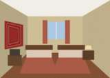
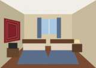
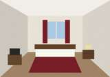
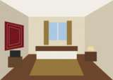

Rooms
Hotel Talas has 178 rooms on 8 floors. All rooms have private bathroom, telephone and TV. Lift to all floors (two lifts).


Standard single
52 rooms, 2nd, 3rd, 7th and 8th floors, 12 m²One bed, writing table, wardrobe, TV, telephone, refrigerator, bathroom with shower. Windows to the courtyard or to the square. Furniture of 1990s, clean and quiet.


Standard twin / double
64 rooms, 2nd, 3rd, 7th and 8th floors, 16 m²Two separate beds or one double bed, TV, telephone, refrigerator, bathroom with bath or shower. Extra bed possible.


Improved single and double (euro-standard)
50 rooms, 4th, 5th and 6th floors, 14–18 m²Reconstructed in 2009. Air conditioner, satellite TV (CNN, BBC, Russian and Turkish channels), new bathroom with hair dryer, safe, mini-bar. Breakfast included.


Junior suite and Suite («Lyuks»)
8 junior suites and 4 two-room suites, 8th floor, 28–46 m²Bedroom and living room with sofa, two TVs, air conditioner, bath, mini-bar, view to Central Square. Breakfast included. The suite 801 is where the guests of honour stayed since 1975.
Services
- Restaurant «Panorama» (9th floor) and lobby bar (1st floor)
- Conference hall for 120 persons with microphone and projector, small hall for 30 persons
- Laundry and ironing, hairdresser (1st floor, 9:00–19:00), newspaper kiosk
- Currency exchange at the kiosk of Talasbank in the lobby (Mon–Sat 9:00–17:00)
- Wi-Fi in the lobby and on floors 4–6 (ask the password at reception)
- Guarded parking behind the hotel
- Taxi by phone, transfer from the airport and railway station